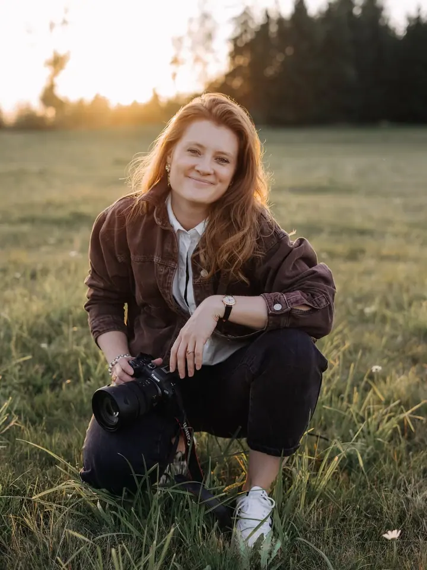

Portrétní focení
Portréty pro ženy i muže, venku v přirozeném světle nebo v interiéru. Fotky, které můžete použít pro sebe, na sítě i pro svou práci.

Portrétní fotografka
Jmenuji se Milada Šolcová a pod značkou adalim.photo fotím portréty a ženské focení. Doma jsem ve Šluknovském výběžku a za focením jezdím i do Prahy. Záleží mi na tom, abyste se na fotkách viděli takoví, jací opravdu jste.
Zeptat se na termínPortréty pro ženy i muže, venku v přirozeném světle nebo v interiéru. Fotky, které můžete použít pro sebe, na sítě i pro svou práci.
Focení jen pro vás, ve kterém jde o to, jak se cítíte ve své kůži. V klidu, bez spěchu a s prostorem být sama sebou.
Jmenuji se Milada a fotím lidi. Nejvíc mě baví portréty a ženské focení, tedy chvíle, kdy se před objektivem uvolníte a přestanete řešit, jak se tváříte.
Doma jsem ve Šluknovském výběžku, ale fotím i v Praze. Pracuji s přirozeným světlem i se stínem, některé fotky nechávám barevné a teplé, jiné převádím do černobílé.
Na focení nemusíte mít žádné zkušenosti. Postupně vás navedu, poradím s pózou i oblečením a dám vám čas. Ty nejlepší fotky obvykle vznikají ve chvíli, kdy na foťák úplně zapomenete.
Pošlete mi e-mail, jaké focení si představujete a kde byste chtěli fotit. Ozvu se vám zpátky.
Společně vybereme místo, termín a oblečení, aby vše sedělo k vám a k tomu, k čemu fotky chcete použít.
Fotíme v klidu a bez spěchu. Průběžně vás navádím, takže se nemusíte bát, že nebudete vědět, co dělat.
Z focení vyberu ty nejlepší snímky, pečlivě je upravím a pošlu vám je v online galerii.
Ve Šluknovském výběžku a v Praze. Pokud máte na mysli jiné místo, napište mi a domluvíme se.
Určitě. Celé focení vás vedu, radím s pózami a dávám prostor, abyste se uvolnila. Většina lidí po pár minutách zjistí, že je to vlastně příjemné.
Hlavně to, v čem se cítíte dobře. Před focením spolu probereme oblečení a ráda vám poradím, co bude na fotkách fungovat.
Cenu a termín dodání vám ráda pošlu e-mailem podle toho, jaké focení si vyberete.